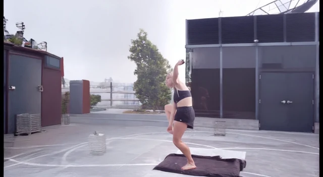
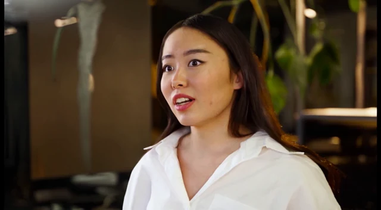
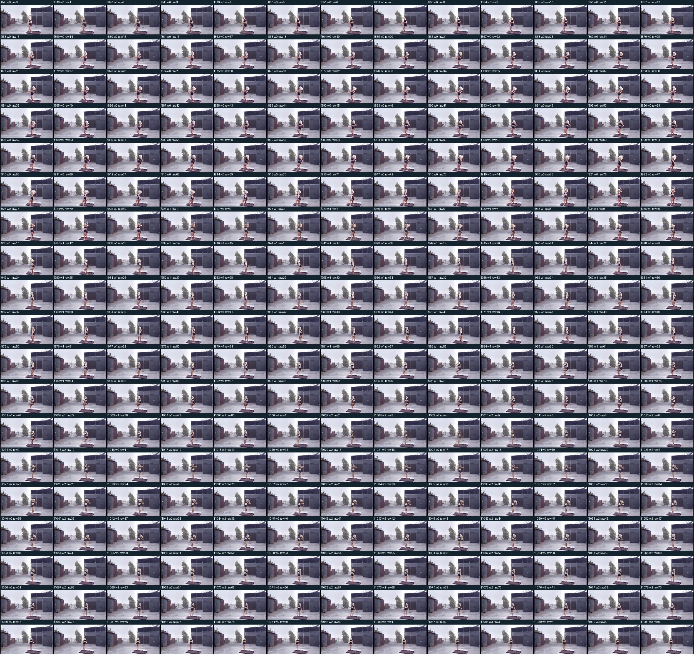
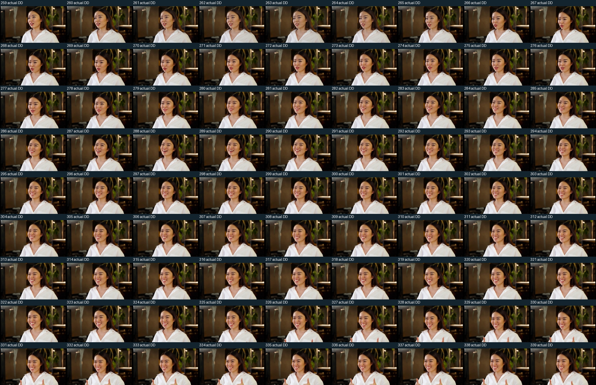
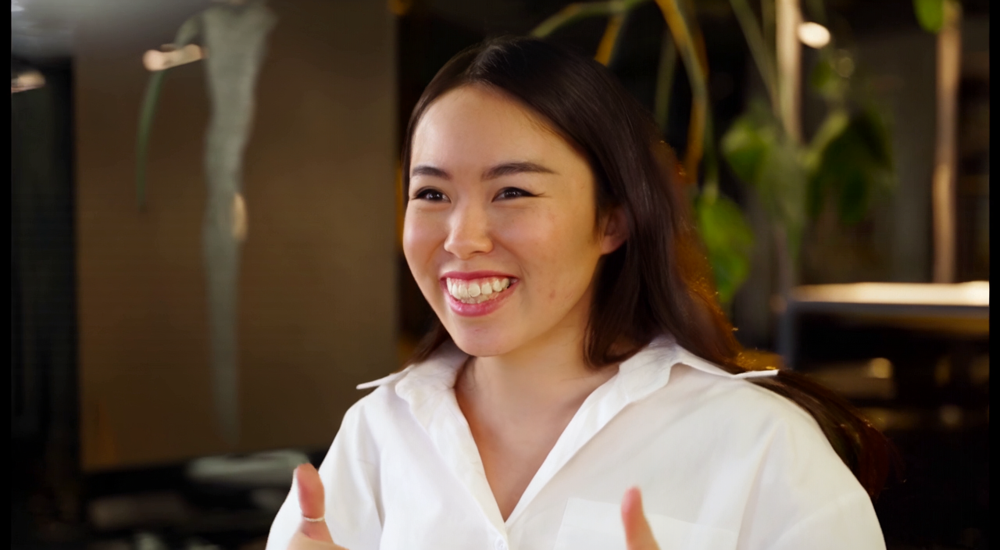
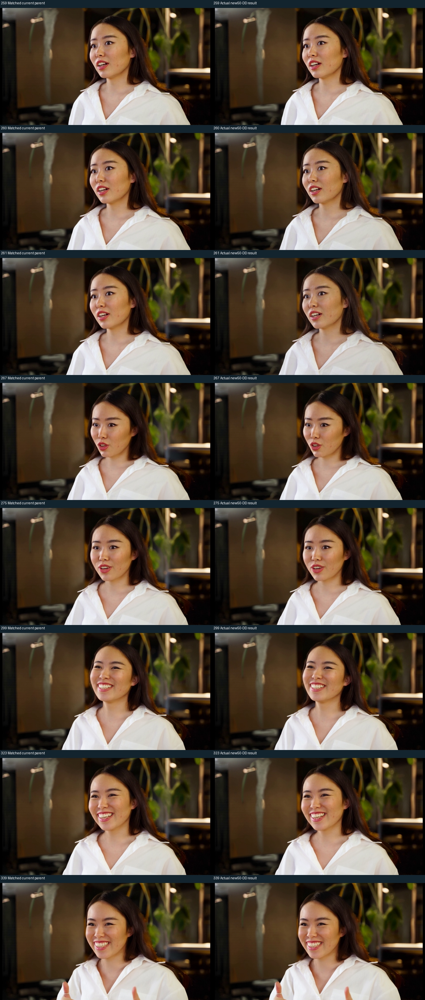
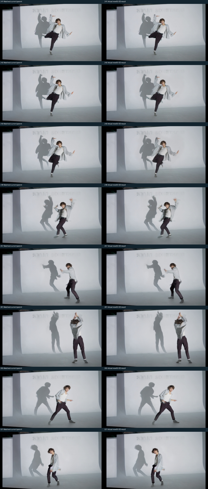
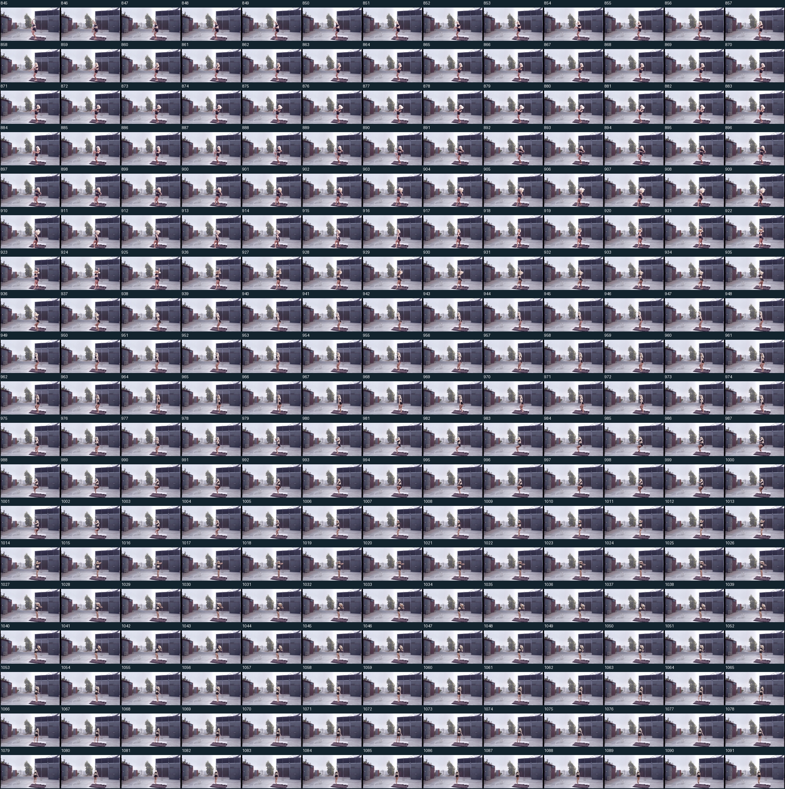
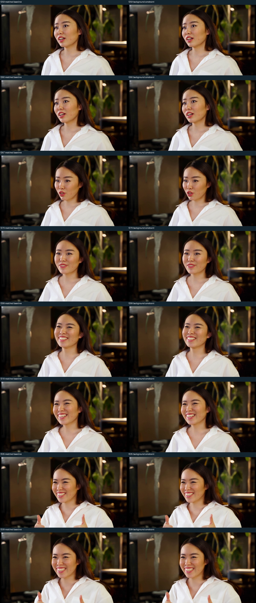

返回全部方法与三案例总表
按原来的三个正确案例验收：屋顶女舞者、D半身、Hard男舞者。每列保留各自匹配基线，不能由一个case的改善推断另外两个已经通过。
完整三案例：复杂247帧、简单D81帧、Hard81帧；改动前后均可直接播放。新版修正背景参考和原生VAE上下文；背景专项与全片人物画质分别验收。
Stage3 原视频片段
Stage2 末帧 · 原尺寸


保留原有输入、提示词、噪声、作者权重与初始化协议。复杂例沿用其既有初始化，不能称为纯DD无先验。
f845–1091 · 247帧 · 15fps
159 KB · 清晰版
原生 DD81，保留既有目标视频初始化0.06；Stage2 +45°。
f259–339 · 81帧 · 15fps
28 KB · 清晰版
原生 DD81，无整段目标视频初始化；正确 D 半身，Stage2 +30°。
f241–321 · 81帧 · 25fps
42 KB · 清晰版
原生 DD81，无整段目标视频初始化；Stage2 标称13.5°。
去噪过程中约束可见背景，并让背景参考编码、视频解码采用一致的参考上下文，减少每窗启动时的背景闪动。保护人物与运动阴影。
三例均为完整真实DD重跑。复杂例保留原有目标视频初始化0.06；简单D和Hard为纯DD。预热参考不计真实帧，首输出会重新解码。未训练新LoRA，未在输出RGB上拼贴、平滑、稳定化或插帧。
完整247帧已核验并查看：树叶接缝闪动减轻，但人物附近仍有局部纹理变化；新版并非各处都优于上一版，全片画质待验收。
56 KB · 清晰版
树叶三处接缝最大相邻RGB变化约10.73→2.17；但近身估计背景均值0.556→0.713，并非各处都更好。请对照下方上一版，局部指标不是画质提升比例。

推理与输入范围核验
完整81帧已核验并查看：保留正确D半身人物，修正头发旁原本可见背景被参考图改色的问题；动作与细节仍需结合视频验收。
输入参考恢复Stage2已可见背景；头发旁黑色物体首帧相邻RGB变化约17.07→0.57。全81帧与人物局部均已检查，不把长发运动算作静止背景抖动。



完整81帧已核验并查看：背景稳定性改善；人物、运动阴影与局部细节仍需结合视频验收。
36 KB · 清晰版
全81帧左墙最大相邻RGB变化 0.171；同时查看完整人物、运动投影与全帧残差，不能仅凭墙面指标判全片画质通过。

每步去噪约束可见背景靠近同一Stage2参考，保护人物动作。复杂例统一输入背景与加噪，并缩窄人物输入边缘，减少旧背景带来的黑边。
本次更新复杂case完整247帧。简单D与Hard沿用已有完整结果；Hard另做协议回归，全部81帧与原结果一致。未训练新LoRA，最终视频未做背景拼贴、稳定化、平滑或插帧。
完整247帧已核验并查看：远处背景漂移和人物周围带状重影明显减轻，旧黑边进一步减少；局部模糊与接缝变化仍在，全片画质尚未通过。
55 KB · 清晰版
右门全247帧平均相邻RGB变化：2.671 → 0.290，包含接缝。仅是远处背景诊断，不代表人物附近或全片画质通过。

完整81帧已核验并查看；远处背景变化减轻，仍需结合动作验收。
27 KB · 清晰版
左墙平均相邻帧RGB变化：0.299 → 0.185。这是局部诊断，不能当作画质提升比例。

完整81帧；明显漂移已减轻，人物附近细微变化继续核验。
两侧墙面边界全81帧变化约0.07 / 0.04像素；原生DD约51 / 54像素。局部边界测量不代表全片画质通过。
复杂 · 屋顶女舞者 · 上一版完整清晰视频
简单 · 原选项 D 半身 · 上一版完整清晰视频
Hard · 男舞者 · 上一版完整清晰视频
上一版完整视频（清晰版）
上一版核验记录
所有影片来自真实DD采样与各窗口原生因果VAE解码。三例均已核验到真实EOF；复杂247帧由4个原生81帧上下文组成，明确剔除重叠参考与EOF补齐输出。局部指标下降不能单独证明动作或全片画质通过。
历史单例结果与局部范围说明保留；这些方法未自动算作三案例都测过。